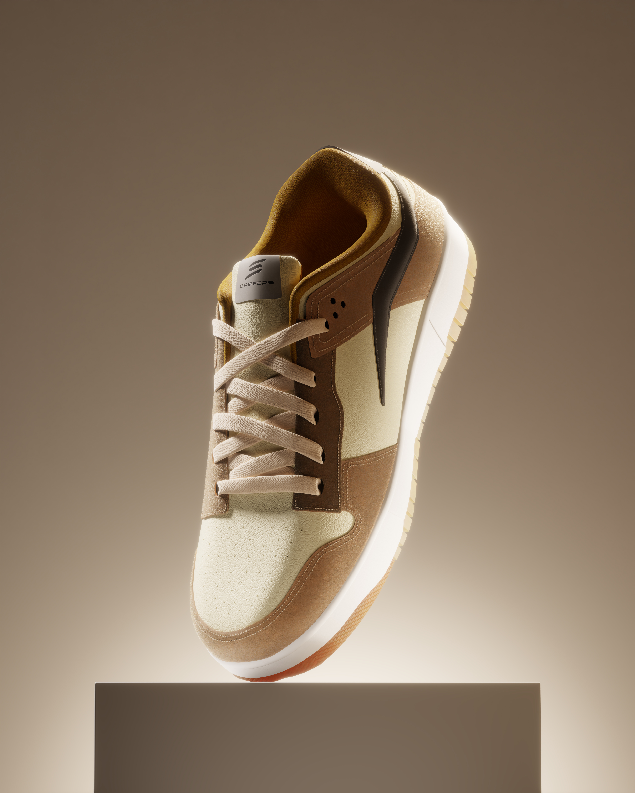
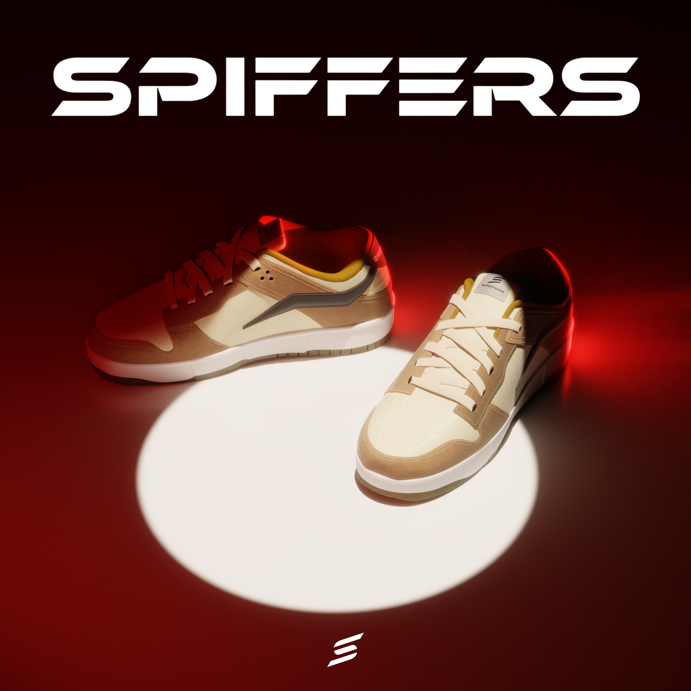

SPIFFERS SHOES
Product Animation & Social Campaign
SOCIAL AD FILM • 9:16
ROLE
3D Product Animator, Lighting & Poster Design
TOOLS
Blender, Substance Painter, After Effects
DELIVERABLES
1 Vertical Ad Video • 2 Social Media Posters
THE CONCEPT
Spiffers Shoes is a social media product campaign built around one of its trending product, The Pablo sneakers. Soft and comfy Build.
Alongside the main ad film, two distinct poster directions were rendered to extend the launch across social posts—balancing warm, minimal studio elegance with bold, high-contrast spotlight drama.
SOCIAL MEDIA POSTERS

SOCIAL POSTER 01
POSTER 01 • BILLBOARDS
SOCIAL POSTER 02
POSTER 02 • SOCIAL MEDIA